OVERVIEW
Mayhem Drive combines arcade racing with vehicular combat. Players can focus on reaching the finish line first,
or destroying opponents while driving through stunt-heavy tracks.
My focus is on making the driving feel immediately readable and fun while still supporting enough underlying
systems for multiplayer competition and long-term development.
WHAT I WORK ON
- Vehicle gameplay and custom driving systems.
- Gameplay programming in Unity and C#.
- Multiplayer-oriented gamemode systems and design decisions.
- 3D asset workflows and vehicle content.
- Tools and pipeline work that reduce repetitive production tasks.
DESIGN DIRECTION
The visual presentation leans deliberately arcade rather than realistic: bold silhouettes, stylized vehicles, exaggerated action and a UI that feels closer to a game cabinet than a conventional software interface.
DEVLOG
STARTING COUNTDOWN LIGHTS
The player tags are complete from last time, and I added a sweet light countdown,
F1 style. An on screen countdown would do the job, but I thought, since it's a
racing game, it must have actual countdown lights. I modified the existing checkpoint
and added the light object.
For each sequence, there is an separate lights object for the light colors, and off state.
I simply animated them turning on and off, and had the GameModeManager trigger the animator
when the countdown reaches 3.
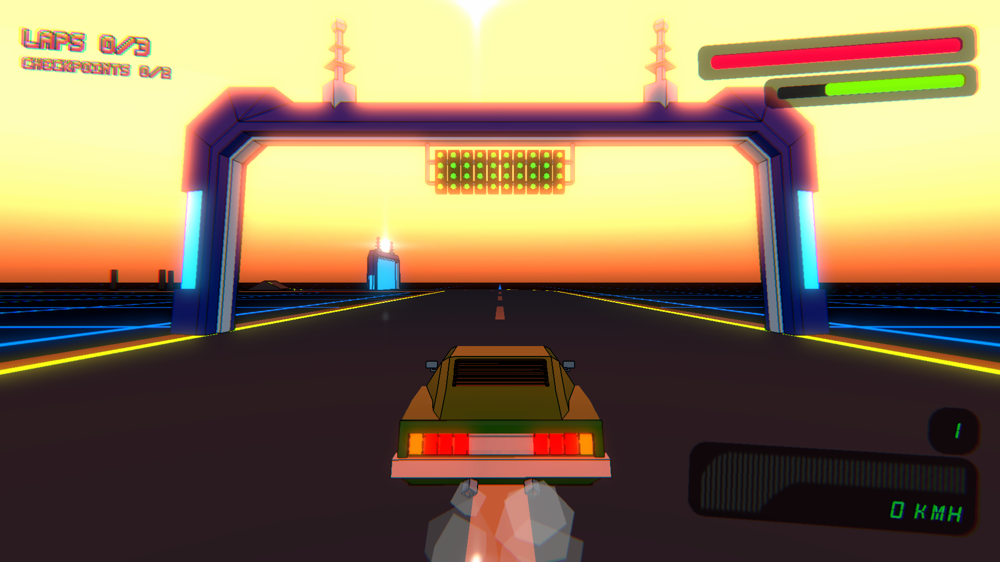
PLAYER TAGS
It's starting to look like a multiplayer game! This is a mini-devlog, since
the tags aren't finished yet. Everybody is PLAYER1 for now, and the healthbar
stays untouched even when damaged. I have to create a name provider system next.
I want the players to have the ability to play off of Steam. Since you can
play LAN multiplayer, and online multiplayer, there are multiple
sources for player names. Hence the name system. Otherwise it would've
been just the Steam username, a no-brainer.
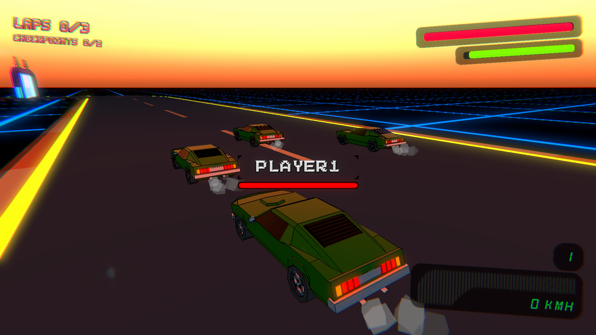
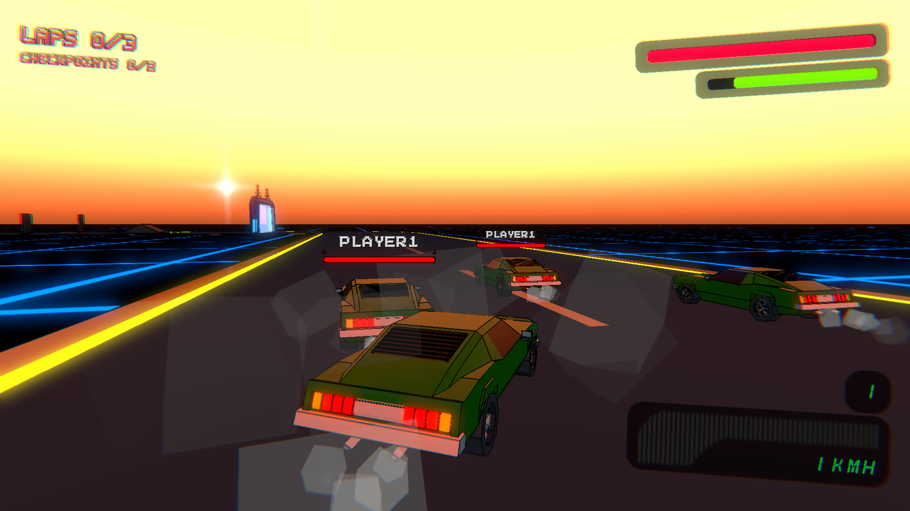
UI NAVIGATION
The project still doesn't have proper UI navigation, so I decided to create
some. Just for now, I am going to do the necessary things, such as starting
and joining a game and quitting.
I made a simple menu art, and animated some buttons with a tweening library.
The most tedious part was easily the game creation screen. I looked at other
games' game creation screens for reference. I could've not made it without
some references. The game has to display a lot of text, while still remaining
attractive and not overwhelming.
Even though it's just the necessities, it's way better than before. Starting
games was possible only through the editor. Super awkward. Most importantly,
I now have a functional game with an actual loop. The game start, end and be
restarted again.
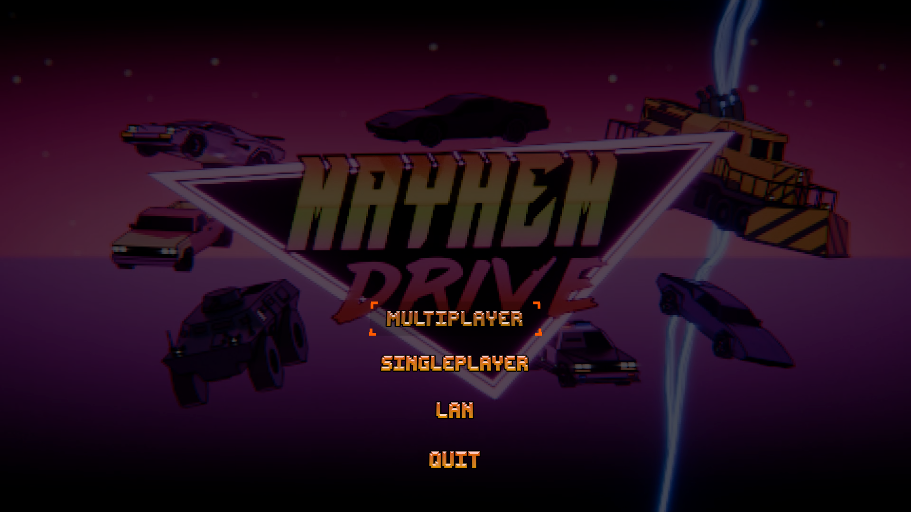
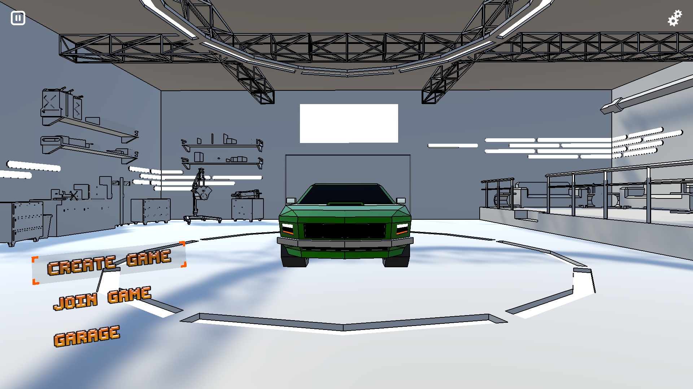
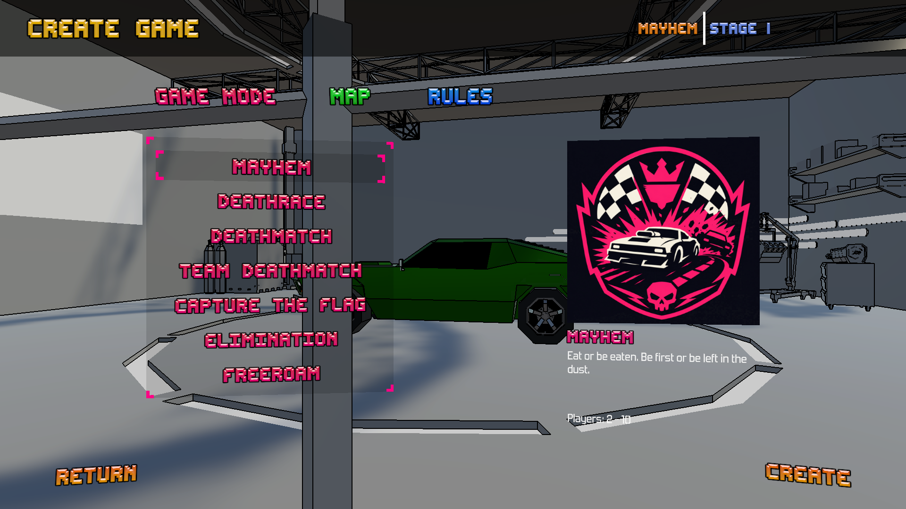
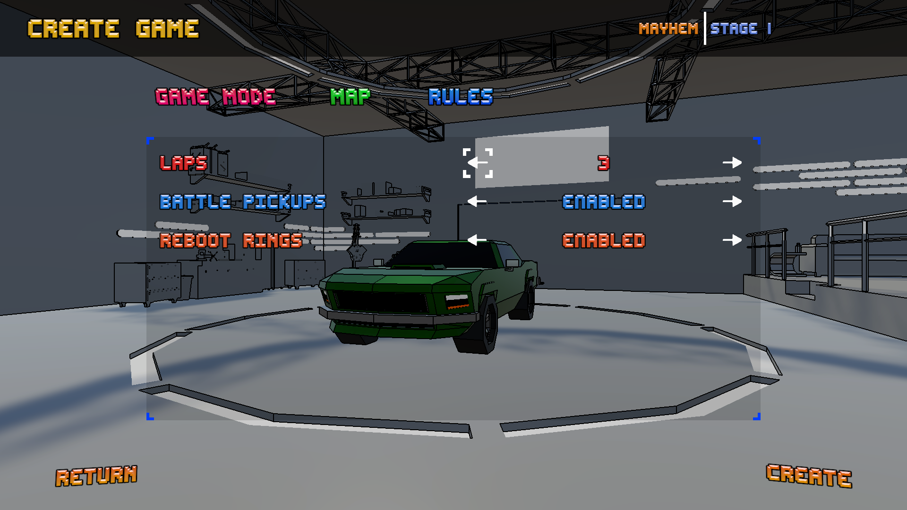
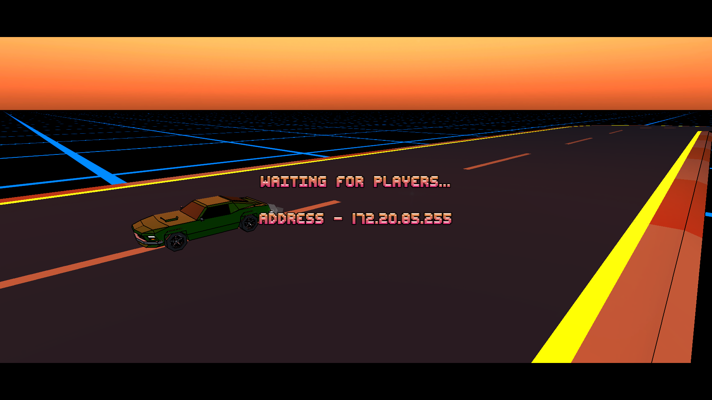
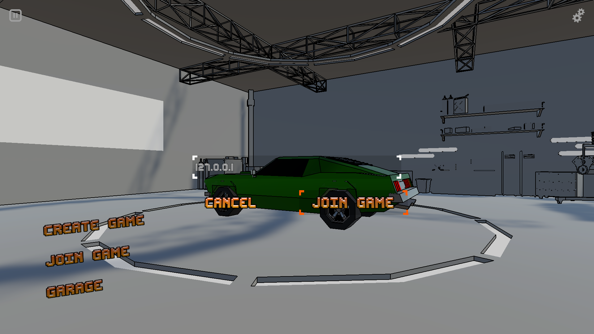
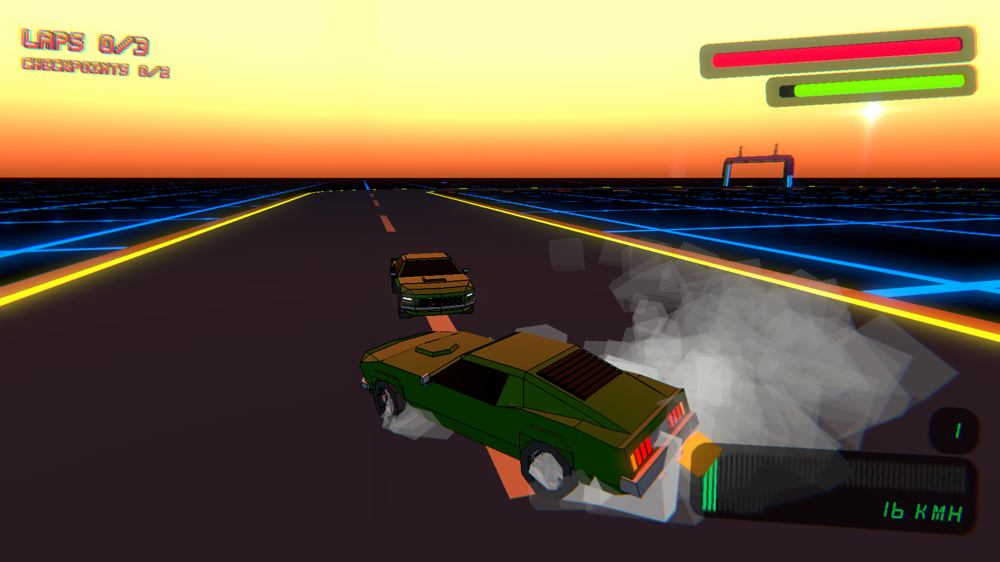
PLATFORM SWITCH
I had the game running at a stable 60 FPS with a budget Android
phone from 2024. It was rendering a simple race track, a few other
obstacles and checkpoints. But only one car. For the target player
counts, such as 10 or 12, it would be getting extremely difficult
to optimize further. The next step to optimize battery life and
framerate stability would've been to target 30 FPS. 30 FPS would
be fine, if it wasn't for the fast pace and nature of the game.
I also hated the HUD, because it needed to have certain overlay buttons
given the platform. So I thought, since nobody is holding a gun
to my head, I would just switch to PC platforms instead. I can
get rid of the disgusting overlay buttons, and have the fast paced
game running at hundreds of frames per second, like it should. On top
of all that, Steam these days is an easier market than the mobile market.
All hail the x86 processor. Stephen P. Morse is the MAN.
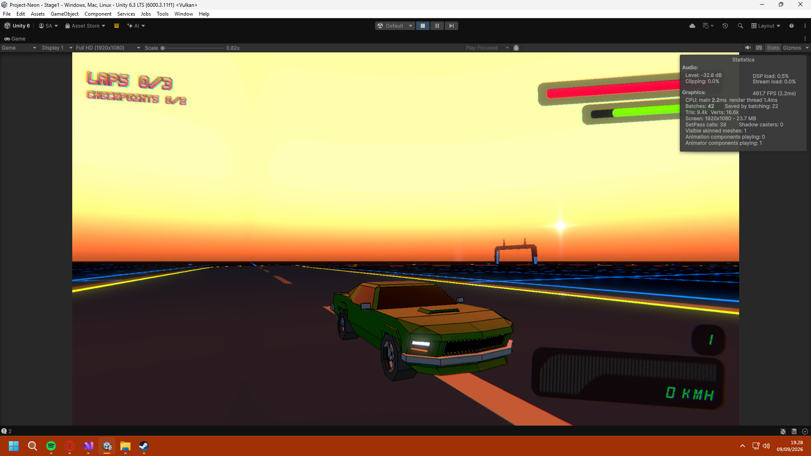
GETTING SIDETRACKED
I wanted a dynamic damage system for the cars. For a few weeks, I was working on modeling separate
parts for cars, that can get damaged individually, and then detach based on locational damage.
This would be possible, by separating common detachable car body parts and then making damage models
with them. Dmg0 was intact, Dmg1 would be visibly damaged, and finally Dmg2 would be totalled.
Swapping body meshes in real time, textures would be changed as well for them,
individually.
I got it working eventually. There was an issue, though. Having so many separate game objects with
instanced materials raised the draw calls substantially. On top of that, multiple instanced materials
in the scene caused the camera to draw the screen space normal map multiple times as well. So one
car could be anything between a couple of draw calls to dozens. That is unacceptable.
As heartbroken as I was, the damage system needed to go. I pulled the plug on it completely. Besides,
it served no other purpose than just being eye-candy. The cars needed to remain predictable no matter
what. So the plan was to have the detached parts be just that, only detached parts. The car would
behave the same. So not a huge loss in the end, but I did spend a couple of weeks on it.
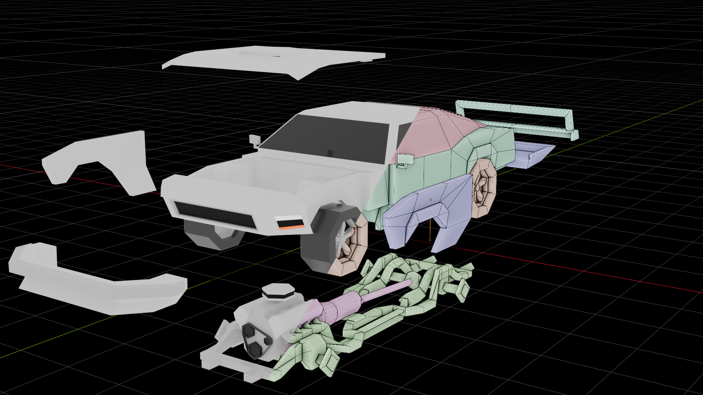
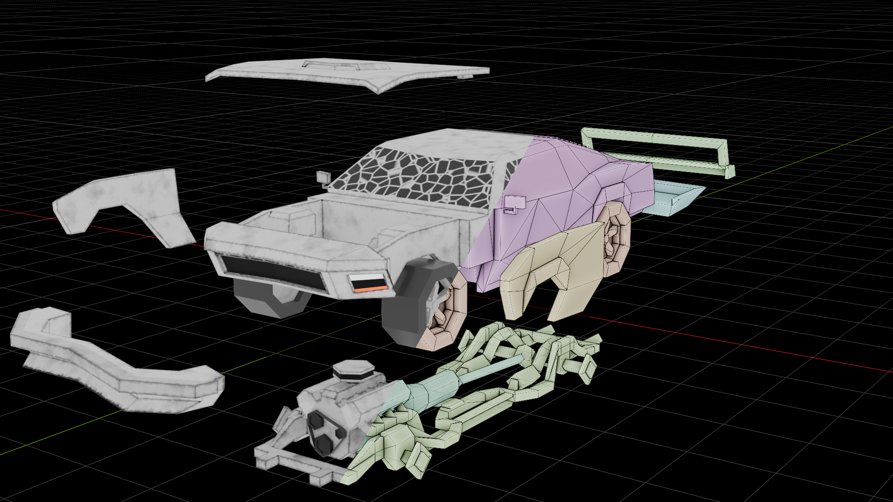
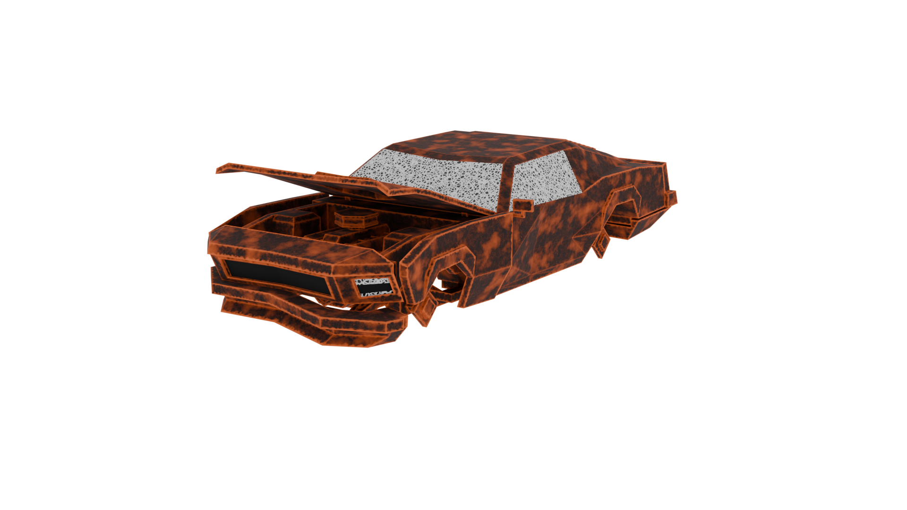
CARTOON SHADER
Cell shaders would've been easy and simple to add, and there is a lot of resources on how
to do it. But I didn't like how Cell shaders only emphasize the very outer edges of geometry
in camera-space. Also, I think Cell shaders have saturated the indie game scene. It was a good
opportunity to stand out, by doing something different.
The shader had to be computationally reasonable, and easily repeatable. And the effect I ultimately
wanted was something between a Cell shader and a Wireframe shader. I wanted something that emphasized
sharp corners in the geometry. Lucky for me, Unity is able to generate a camera normal and depth map,
and those texture maps can be utilized easily.
By iterating through each pixel and their neighbouring pixels, we could compare the differences in them.
If the difference was above a certain threshold, we know it is a sharp corner, and therefore, a pixel can
be drawn on top of that pixel in the screen. I found research on the wanted effect, while searching online.
Turns out, someone beat me to it. And the shader magician, Daniel Ilett had developed it as a post-processing
shader. Even better!
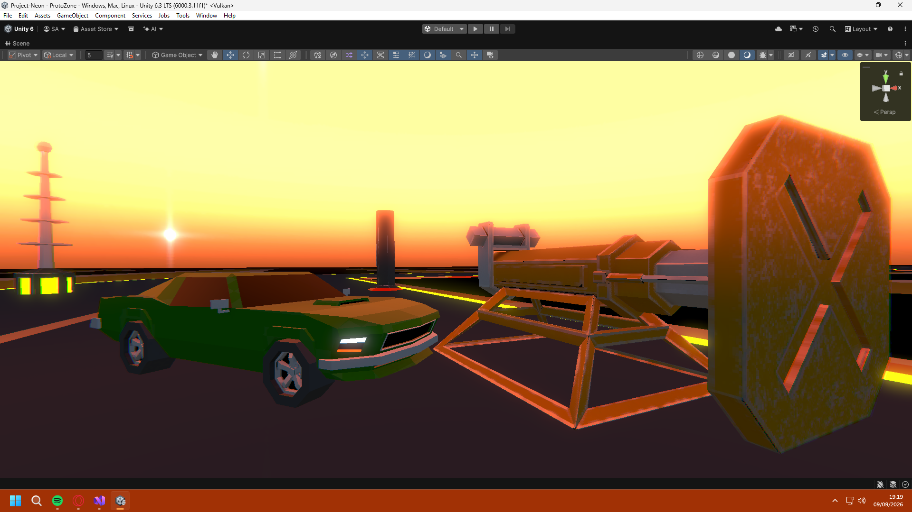
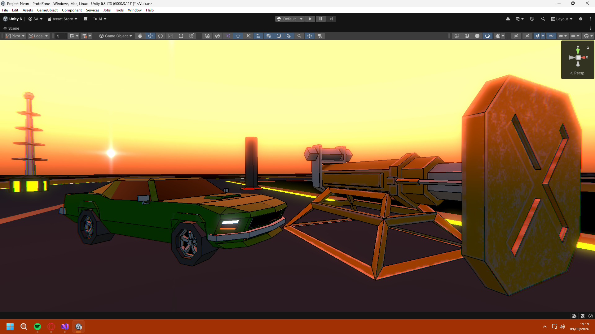
SHADER OFF SHADER ONCORE SYSTEMS
So it begins. I wanted predictable, simple and arcade-y car physics. Since the project was targeting
mobile platforms, the physics needed to be computationally cheap. It needed to be multiplayer, after all.
Car physics start with the wheels, so I immediately looked at Unity's built-in solution: Wheel Colliders.
I quickly noticed, the Wheel Collider uses more realistic grip/traction models.
Hacking Wheel Colliders into arcade behaviour
would take a lot more time than just making my own custom solution. So I researched on various
sites, until I found great tutorials on the matter in Youtube. None of them made the wheels
quite how I liked it, but it taught me what physical interactions were necessary at the very
least.
After a couple of weeks of experimenting, I landed on a solution, that would later be the foundation of
the later versions of the Retro Wheel component.
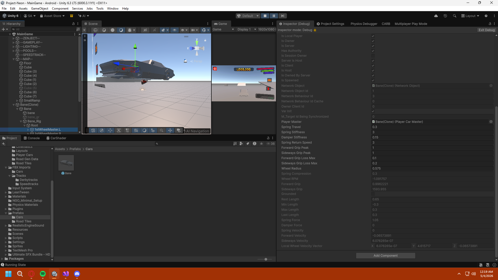